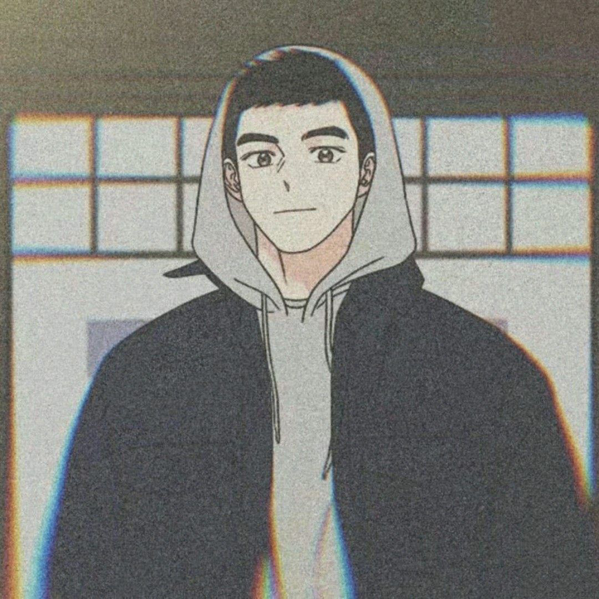
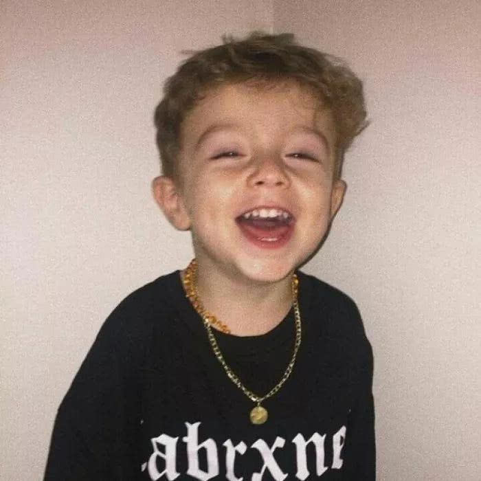

caozhiwei
首页
日志
生活
关于
联系我：185-2583-3015
邮箱：2062660634@qq.com

博客日记
兴趣是支撑前行的动力！
在没有学习前端设计， 在没有自己博客之前， 我的兴趣爱好很多， 比如打游戏，看电影，运动等。 这些是生活当中自己排遣娱乐的一种方式。 明明觉得自己很喜欢， 但有时候还是会半途而废，其实，有兴趣只是起点，保有持久兴趣才是关键。
生活的乐点
几天前和朋友去KTV玩找了个陪唱的， 走的时候小妹说：哥以后不要来了 赚钱也不容易，省点钱买瓶护手霜吧，丝袜都摸起球了。
微笑
别人说：人在微笑的时候，没有呼吸，不信你可以试试...<(￣︶￣)>。

自律·努力
微笑的镜子
生活不如意总比如意多， 而对此的恪守，热情恰恰也源于 自身的坚韧。时刻提醒自己， 要自律，要保持份内在的从容与安静。
思考.坚持
不论什么年龄段， 要想拥有良好的状态， 一定不能放弃对自我的要求， 时刻提醒自己，保持自制力。 相信自律会让我们变得越来越好！
日常一笑
皮肤给你送了，段位给你打了，你现在跟我说你是男的，草泥马就算是男的我也要跟你在一起。
博客日记
兴趣是支撑前行的动力！
在没有学习前端设计， 在没有自己博客之前， 我的兴趣爱好很多， 比如打游戏，看电影，运动等。 这些是生活当中自己排遣娱乐的一种方式。 明明觉得自己很喜欢， 但有时候还是会半途而废，其实，有兴趣只是起点，保有持久兴趣才是关键。
生活的乐点
几天前和朋友去KTV玩找了个陪唱的， 走的时候小妹说：哥以后不要来了 赚钱也不容易，省点钱买瓶护手霜吧，丝袜都摸起球了。
微笑
别人说：人在微笑的时候，没有呼吸，不信你可以试试...<(￣︶￣)>。